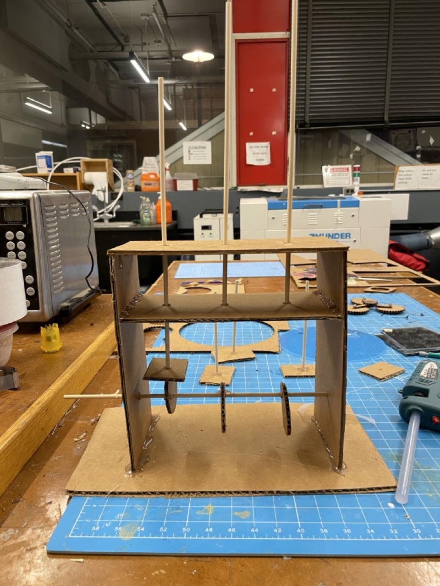

Week 3: Kinetic Sculpture
Outline:
Note: This week was very rough and I wasn't able to work on my project until the last day. But I was able to finish the assignment completely, so I am very proud! However, my documentation will be quite poor since I am writing this at 3 am. I will improve on it in the upcoming days, though. I am including the videos and images that prove I did everything that the assignment required, in lieau of more extensive documentation.
Ideation
My idea was a take on the basic model we've been seeing this week. I wanted to make a kinetic sculpture that could incorporate the tresillo rhythm. This is a rhythm that places emphasis on the 1, 4, and 7 beats in a standard 8-beat pattern. It's also known as a 3-3-2 rhythm. My goal was to make a sculture with three spokes poking outward that moved such that each spoke represented one of the three main beats in the tresillo rhythm.
Prototype
I was able to do a very rough prototype using cardboard (cutting it with an exacto knife, making holes with drills, and joining pieces together with hot glue). It worked surprisingly well.

